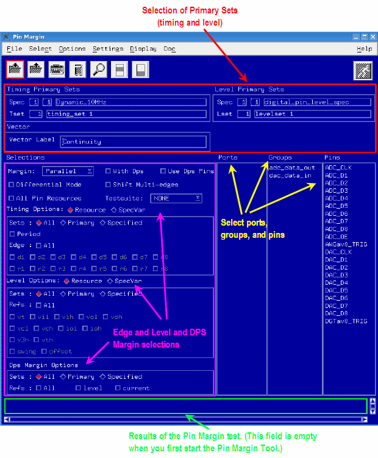
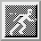

Setting up a Pin Margin Test
To set up a Pin Margin Test:
- Download the dataset you want to use.
- In your testflow go to the point where you want to perform the pin margin test and execute the appropriate testsuite.
- In the main button bar select Debug .Note The Pin Margin tool normally uses the currently downloaded data. The data set can be changed directly via the Pin Margin user interface. The primary sets or specified sets can be selected in the and Level Options boxes on the main setup page.
A screen similar to that shown below appears.

- Set up the pin margin parameters as required (see following sections).Note The initial pin margin screen always comes up with default settings (for details see Default Settings).
- Click

to run the test.
Functional changes
- Introduced before SmarTest 6.3.2